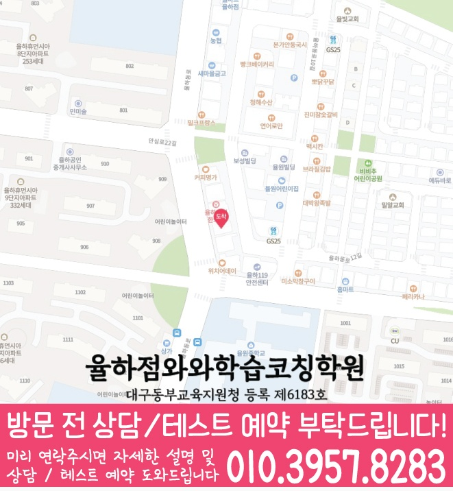

최근 모의고사/내신 흐름과 학교 진도에 맞춰 문법 약점, 독해 시간, 오답 패턴을 먼저 점검하고 학습 순서를 설계합니다.
지역별 수강 안내
신기동 고2 영어학원
방문할 지점과 수강 조건
율하점 수강 정보
- 연결 지점
- 율하점와와학습코칭학원
- 영어 수강 학년
- 초1~초6 / 중1~중3 / 고1~고3
- 방문 주소
- 대구 동구 율하동로 32 4층 와와학습코칭센터
제공된 지점 자료에서 율하점의 고2 영어 수강 학년을 확인했습니다. 현재 모집과 시간표는 상담에서 확인해 주세요.
대구 동구 신기동에서 고2 학생을 위한 영어학원을 찾고 있다면, 와와학습코칭센터 율하점이 내신과 모의고사 대비에 맞춘 학습 로드맵을 제공합니다. 단순 문제풀이가 아닌 문법·독해·어휘 개념 점검부터 유형별 훈련, 오답 정리와 학습 피드백까지 이어지는 코칭형 커리큘럼으로 영어 실력을 탄탄하게 쌓아갑니다. 필요에 따라 수학·국어·영수(연계) 학습도 함께 관리해 학습 밸런스가 무너지지 않도록 돕습니다.
신기동 고2 수업의 핵심 포인트
문법은 개념-적용으로, 어휘는 빈출 문맥 중심으로, 독해는 문장 구조와 근거 찾기로, 서술형은 채점 기준에 맞춰 훈련합니다.
선생님 특징
어디서 막히는지 원인을 찾고, 개념 설명이 끝이 아니라 다음 문제로 바로 이어지도록 단계적으로 연결해 줍니다.
틀린 문제를 재풀이만 하지 않고 ‘왜 틀렸는지-다음에 어떻게 풀지’를 정리해 반복 오류를 줄이도록 관리합니다.
수업 진행방식
1. 현재 수준 확인
고2 영어 진도, 최근 시험 결과, 자주 틀리는 유형을 바탕으로 약점 단원과 시간 소모 구간을 정확히 분류합니다.
2. 문법·독해 개념 정리와 유형 훈련
문법 핵심 개념을 정리한 뒤, 학교 내신/모의고사 유형을 단계적으로 학습해 문제를 ‘푸는 근거’를 만들게 합니다.
3. 오답 관리와 맞춤 피드백
오답을 기록하고 유형별 재발 방지 전략을 세워, 다음 학습에서 성적이 오르도록 피드백을 제공합니다.
학년별 학습 전략(고2 중심)
고1
- 기초 문법과 독해 기본기(문장 구조/지칭)를 빠르게 안정화합니다.
- 내신형 문제 풀이 습관을 만들어 고2로 자연스럽게 이어지게 합니다.
고2
- 문법 심화와 독해 난이도 상승에 맞춰 유형별 풀이 루틴을 구축합니다.
- 내신·모의고사 모두 대응하도록 오답 패턴을 분석하고 집중 보완합니다.
고3
- 수능형 독해 전략과 시간 관리로 실전 완성도를 높입니다.
- 약한 단원과 반복 오답을 우선순위로 재정비합니다.
영어 + 수학·국어 연계(영수)
- 영어 성적이 흔들릴 때에도 학습 밸런스를 함께 점검합니다.
- 수학·국어 연계 학습으로 전체 학습 효율을 높이고 성적 상승을 돕습니다.
대구 동구 신기동(율하점) 영어학원 선택 포인트
시험 범위와 출제 경향에 맞춰 영어 문법·독해·어휘를 균형 있게 준비합니다.
개인별 오답 유형을 기준으로 다음 학습을 설계해 같은 실수를 반복하지 않게 합니다.
단원별 성취 목표를 세우고 점검 주기를 두어 꾸준히 실력이 쌓이도록 코칭합니다.
대구 동구 신기동 고2 영어학원으로 와와학습코칭센터 율하점을 찾는다면, 현재 수준 진단부터 개념 정리, 유형 훈련, 오답 관리까지 이어지는 학습 흐름으로 내신과 모의고사 성적 향상을 돕겠습니다. 상담을 통해 신기동(대구 동구) 학생 맞춤 학습 방향을 안내드립니다.
센터 위치 안내
주소
대구 동구 율하동로 32 4층 와와학습코칭센터
오시는 길
율하동로 32 대은빌딩 4층이며, 119센터와 율원중학교 근처입니다.
상담에 참고할 학교 목록
학교별 내신 수업과 수강 가능 여부는 센터에 확인해 주세요.
초등학교
대구숙천초등학교
대구안일초등학교
대구율금초등학교
대구율원초등학교
중학교
강동중학교
동원중학교
새론중학교
신기중학교
안심중학교
율원중학교
고등학교
강동고등학교
대구동부고등학교
정동고등학교
과목별 수강 가능 학년
국어
초1
초2
초3
초4
초5
초6
중1
중2
중3
고1
고2
고3
영어
초1
초2
초3
초4
초5
초6
중1
중2
중3
고1
고2
고3
수학
초1
초2
초3
초4
초5
초6
중1
중2
중3
고1
고2
고3
과학
초1
초2
초3
초4
초5
초6
중1
중2
중3
고1
고2
고3
사회
초1
초2
초3
초4
초5
초6
중1
중2
중3
고1
고2
고3
학원 등록 정보
교육비 참고와 확인할 조건
지역 공통 참고 금액입니다. 이 지점의 확정 교습비는 안내 자료와 상담에서 확인해 주세요.
기존 공통 안내: 서울 외 (1회 90~100분, 단위: 원)
| 횟수 | 초등 | 중등 | 고등 |
|---|---|---|---|
| 주 3회 | 219,000 | 236,000 | 269,000 |
| 주 4회 | 279,000 | 301,000 | 344,000 |
| 주 5회 | 339,000 | 366,000 | 419,000 |
위 표는 기존 공통 안내 금액으로, 현재 센터별 교습비와 다를 수 있습니다. 실제 과목·수업 시간·추가 프로그램과 최종 금액은 교습비 안내 자료 및 센터 상담을 통해 확인해 주세요.
고2 영어 상담부터 오답관리까지 이어지는 흐름
고2 영어는 내신 지문 관리, 문법 적용, 독해 속도, 어휘 누적이 함께 필요한 시기입니다. 상담에서는 현재 점수보다 어떤 지점에서 해석과 근거 판단이 흔들리는지 먼저 확인합니다.
현재 수준 확인
학교 진도, 최근 영어 시험 결과, 어려운 지문, 문법 단원, 어휘 암기 습관을 확인합니다.
문법·독해 진단
문장 구조, 구문 해석, 지문 근거 찾기, 선택지 판단 과정을 나누어 약점을 점검합니다.
플래너 실행 점검
어휘 암기, 지문 복습, 문법 문제, 오답 재풀이를 주간 계획으로 나누고 실행 여부를 확인합니다.
오답 원인 분석
틀린 문제를 어휘 부족, 해석 오류, 문법 혼동, 근거 누락으로 분류해 다음 학습에 연결합니다.
CONSULTING CHECKLIST
신기동 고2 영어학원 상담 전 체크리스트
실제 상담 전 아래 항목을 확인하면 학생에게 필요한 영어·수학 학습 방향을 더 빠르게 정리할 수 있습니다.
- 현재 교재사용 중인 교재와 진도를 확인합니다.
- 최근 시험지점수보다 반복되는 오답 유형을 확인합니다.
- 공부 시간평소 공부 시간과 숙제 수행 정도를 봅니다.
- 상담 목표성적, 습관, 오답, 시험 대비 중 우선순위를 정합니다.
STUDY GUIDE
신기동 고2 영어 학원 학습관리 포인트
신기동 고2 영어 학원을 찾는 학생이라면 고2 과정에서 필요한 영어 학습 목표를 먼저 정리하는 것이 좋습니다. 현재 학교 진도와 최근 시험 결과, 숙제 수행 습관을 함께 보면 상담 방향이 훨씬 구체적입니다.
시험 직전에 한꺼번에 외우기보다 지문별 핵심 어휘와 표현을 주간 단위로 누적 관리합니다.
감으로 해석하지 않고 주어·동사·수식어 구조를 표시해 독해 근거를 남기는 습관을 만듭니다.
본문 암기에서 끝내지 않고 빈칸, 순서, 어법, 서술형으로 바뀔 수 있는 문장을 따로 정리합니다.
대구 동구 신기동 상담 전 체크
최근 시험지, 학교 진도, 어려운 단원, 숙제 수행 정도를 함께 정리해두면 상담에서 학생에게 필요한 학습 순서를 더 빠르게 잡을 수 있습니다.
함께 보면 좋은 학습가이드
현재 페이지의 학년·과목과 연결되는 정보성 콘텐츠입니다. 지역 페이지와 함께 읽으면 상담 준비와 학습 계획을 더 구체화할 수 있습니다.
신기동 관련 학원 페이지
현재 보고 있는 지역 안에서 센터 안내와 학년·과목별 상세 페이지로 바로 이동할 수 있습니다.
신기동 고2 영어학원 상담이 필요하신가요?
고2 영어의 현재 문법 이해도, 독해 속도, 어휘 습관, 내신 대비 계획을 정리해 상담문의로 남겨주시면 학습 방향을 더 구체적으로 확인할 수 있습니다.
상담문의LOCAL DETAIL LINKS
신기동 관련 학습 페이지 바로가기
같은 동네 안에서 함께 보면 좋은 학년·과목별 학습 안내 페이지를 정리했습니다.
동네 학원
신기동학원 영어수학 전문학원
같은 동네의 기본 영어수학 학원 안내로 이동합니다.
연관 과정 신기동 고1 수학학원같은 동네의 다른 학년·과목 안내도 함께 확인할 수 있습니다.
연관 과정 신기동 고1 영어학원같은 동네의 다른 학년·과목 안내도 함께 확인할 수 있습니다.
연관 과정 신기동 고2 수학학원같은 동네의 다른 학년·과목 안내도 함께 확인할 수 있습니다.
연관 과정 신기동 중2 수학학원같은 동네의 다른 학년·과목 안내도 함께 확인할 수 있습니다.
연관 과정 신기동 중2 영어학원같은 동네의 다른 학년·과목 안내도 함께 확인할 수 있습니다.
연관 과정 신기동 중3 수학학원같은 동네의 다른 학년·과목 안내도 함께 확인할 수 있습니다.
연관 과정 신기동 중3 영어학원같은 동네의 다른 학년·과목 안내도 함께 확인할 수 있습니다.
수강 전에 자주 묻는 질문
신기동에 있는 별도 지점인가요?
이 동네 안내에서 연결되는 곳은 율하점와와학습코칭학원입니다. 실제 방문 주소는 대구 동구 율하동로 32 4층 와와학습코칭센터입니다.
고2 영어을 수강할 수 있나요?
제공된 지점 자료에서 율하점의 고2 영어 수강 학년을 확인했습니다. 현재 모집과 시간표는 상담에서 확인해 주세요.
교육비 표의 금액으로 바로 등록할 수 있나요?
지역 공통 참고표는 개별 지점의 확정 교습비가 아닙니다. 교습비 안내 자료에서 과목당 금액과 수업 시간·횟수·교재비를 확인하고 최종 비용을 상담에서 확인하세요.
학습코칭 안내 이미지와 위치 지도 보기



안내 자료 대조: . 현재 모집·시간표·최종 비용은 지점에서 확인해 주세요.